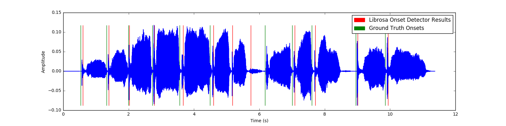
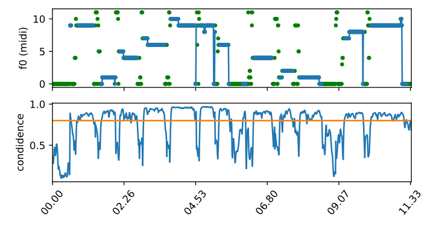

Record yourself singing or talking. Don’t worry, we won’t judge the quality of your voice.
Example Input
Kick back and enjoy your “jazzified” voice while drinking a scotch by the fireplace.
Example Output
Harmonious Monk (HM), allows a user to instantly become a jazz composer by automatically harmonizing speech or a melody. Though pitch tracking and harmonization have been done before, HM presents a different approach: harmonization based on jazz standards. Named after the great Thelonious Monk, HM transcribes speech into pitches and harmonizes it with jazz chords, drawing its chordal vocabulary and harmonic progressions from the tunes it analyzed from the iRealPro database.
HM transcribes a monophonic melody or speech using the Yin pitch tracking algorithm, and harmonizes the transcription with jazz chords. We built hidden Markov models (HMMs) based on a large sample of jazz standards, and these HMMs determine how the melody is harmonized. HM then uses the Viterbi algorithm to pick the most probable chord progression. The final product is the original audio with a sequence of harmonized piano chords laid underneath.
An XML parser was constructed to extract the key/chords from a database of jazz standards. After transposing all of the tunes to the same key, HM derives transition probabilities from chord to chord, which are used to create hidden Markov models. To transcribe the input melody, HM uses the Yin pitch tracker and the librosa onset detector to output an array of notes and frames, which are then used to find the most probable chords associated with the given melody notes using the Viterbi algorithm. HM then adds pre-recorded piano chords at the onset frames and writes a new .wav file. HM was tested using melodies from jazz standards, and the onsets were compared to ground truth onsets from Audacity.


Top: An example sound wave of a singing male voice with onsets marked.
Mid: The results of the pitch tracker, with 0 = C pitch class.
Bot: Pitch tracker confidence level, with a threshold of 0.8.
The results of our methodology were quite successful. HM is able to harmonize any sung melody or spoken sentence with relative speed, accuracy, and ease. The jazz chord progressions sound like real chord progressions that are even recognizable from certain tunes. Our pitch tracker and onset detection work accurately as long as the onsets are not too frequent.
iRealPro: database of jazz standards
Aubio: pitch tracker source
Librosa: onset detector source
HMMs in Python: hidden Markov model source
XML Parser: reference used for xml parsing
Viterbi Algorithm: reference used for our Viterbi implementation
I’ve been trying to make it in the jazz industry for decades. After using Harmonious Monk, I finally made it! I’m now recognized as a real jazz musician!
The news has been reporting that the American people don’t like my speeches. FAKE NEWS! SAD! Anyways, I was looking for a way to make my speeches more interesting. Thanks Harmonious Monk. Make America Jazz again!
When I heard what was coming out of Harmonious Monk, I turned in my grave… in a good way! This program is killin’!
Daniel is an Electrical Engineering and Guitar Dual Degree student. This past summer, he worked as a Product Development Intern at Ford Motor Company.
Kevin is a Computer Science and Music double major. This past summer, he worked as a Process Control Systems Engineering Intern at Arconic
Michelle is a Computer Science major. This past summer, she remodeled and worked on the Northwestern University McCormick website.